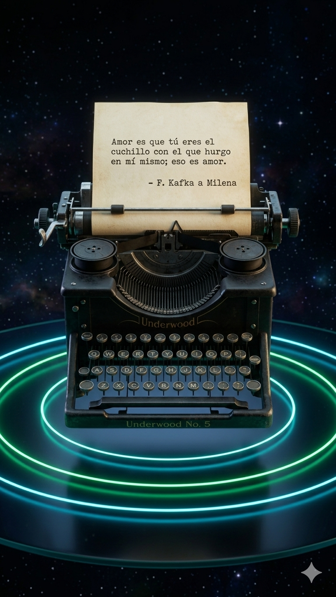
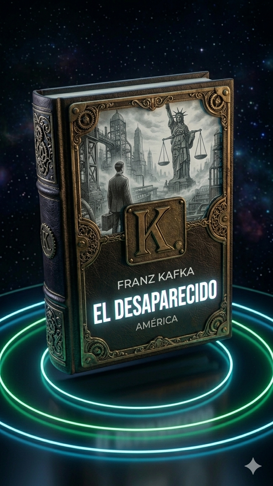
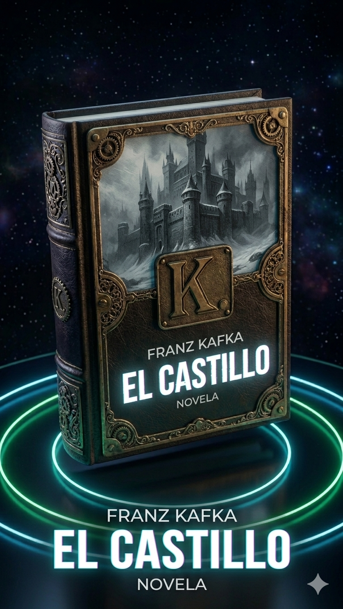

KAFKA

El Arquitecto del Absurdo
Nacido el 3 de julio de 1883 en Praga, Franz Kafka transformó su alienación y la asfixiante burocracia en la literatura más influyente del siglo XX. Trabajaba de día en seguros de accidentes laborales y escribía de noche, explorando la impotencia del individuo frente a sistemas incomprensibles.
La Sombra de Hermann
Su vida estuvo marcada por la figura tiránica de su padre. En su famosa Carta al padre, Kafka desnudó el terror y la culpa que sentía ante la autoridad, temas que transmutarían en los tribunales de El Proceso.
"Un libro debe ser el hacha que rompa el mar helado dentro de nosotros."
Legado Póstumo
Antes de morir en 1924, pidió a Max Brod quemar su obra. Brod desobedeció, rescatando manuscritos como El Castillo de las llamas, regalando al mundo la voz más lúcida del absurdo existencial.
Lomos de Obra



El Proceso

Metamorfosis

El Castillo